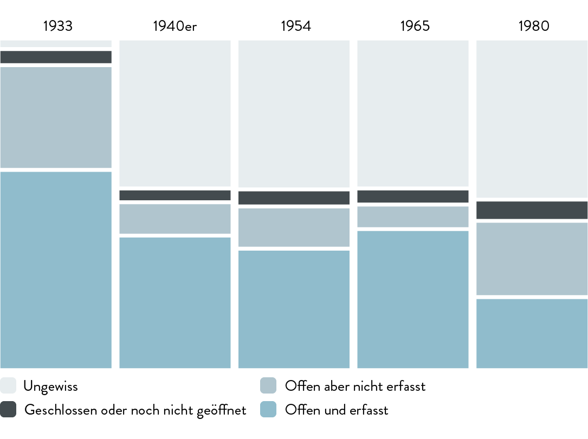
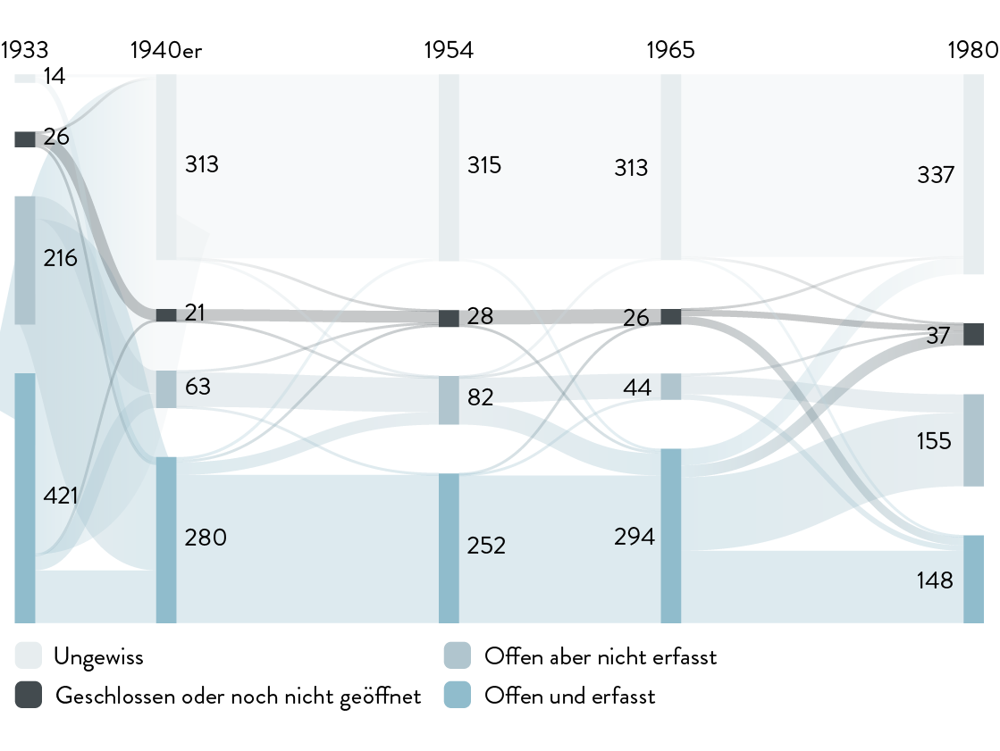
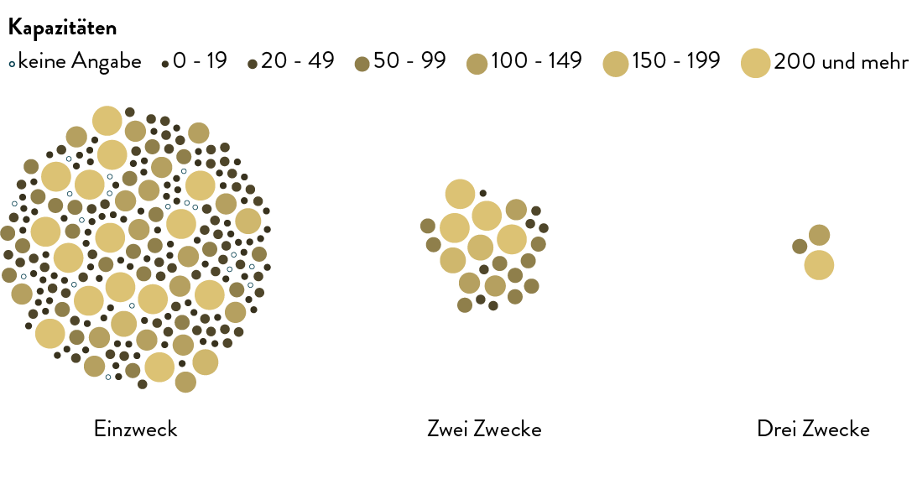
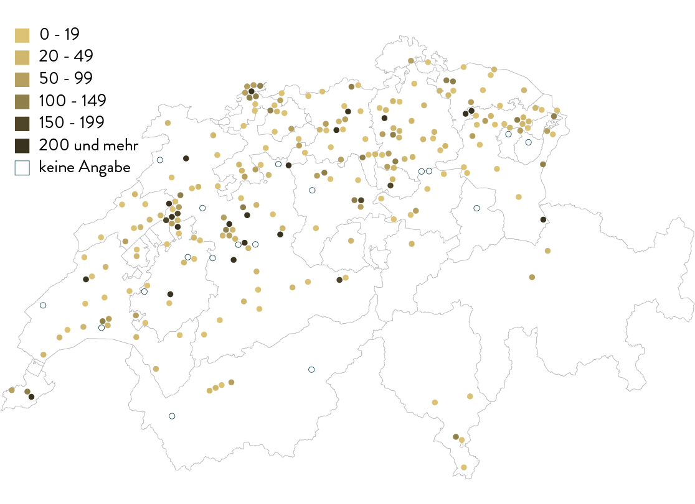
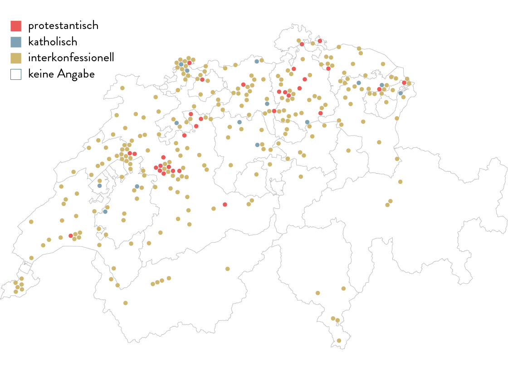
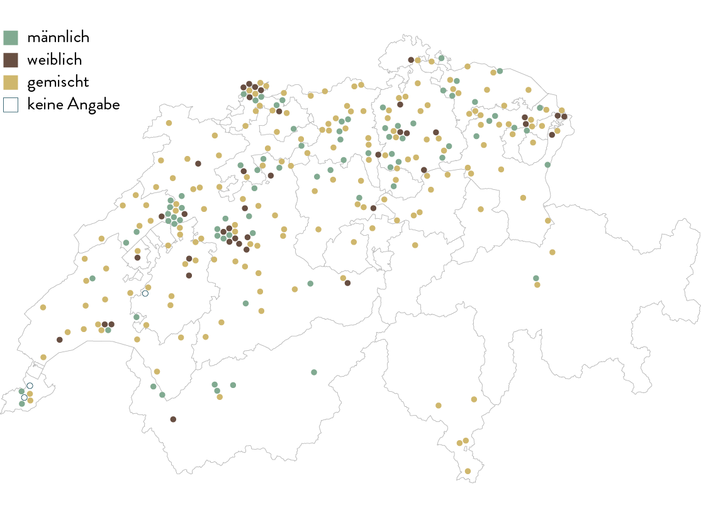
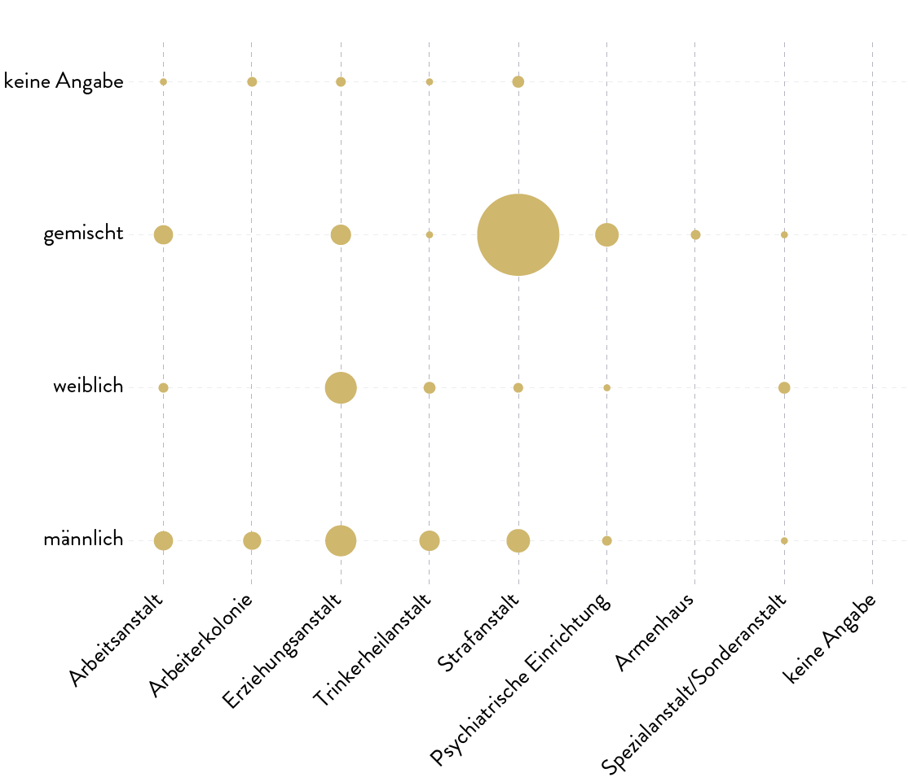
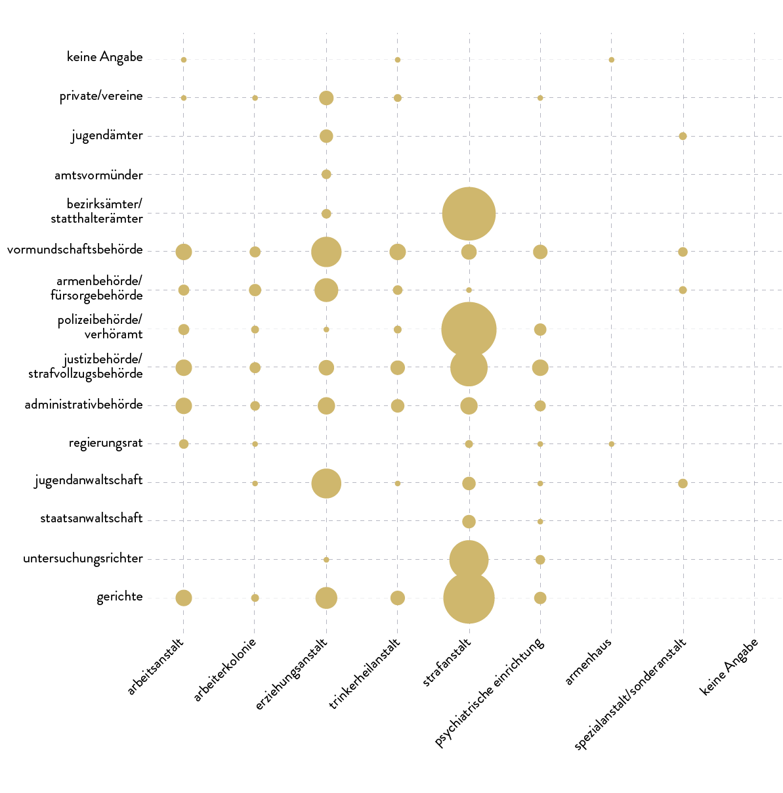
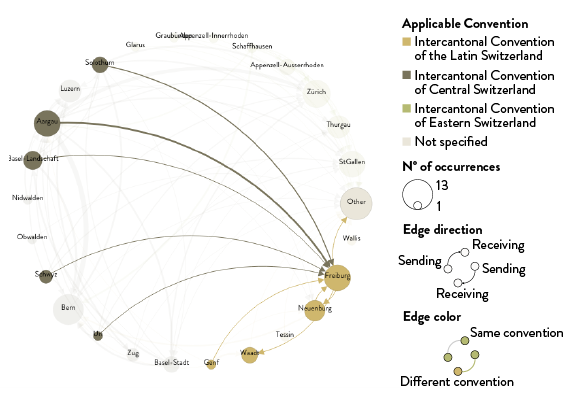
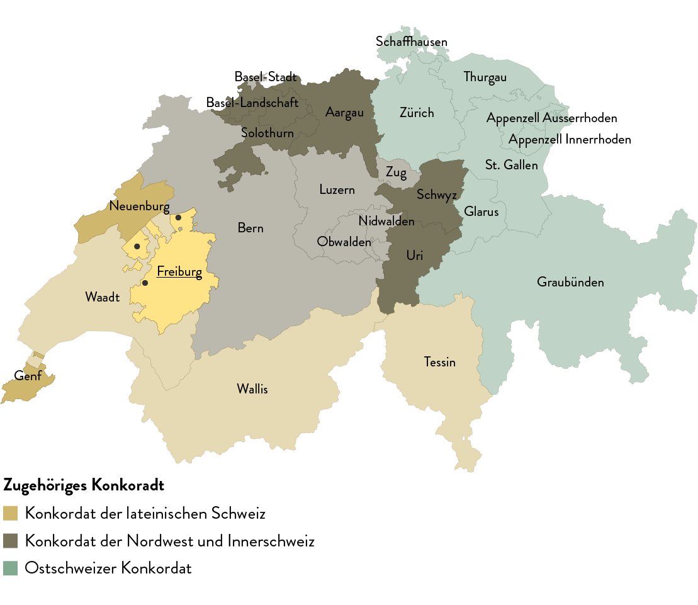

Daten werden geladen…

Zuschreibungen wie «arbeitsscheu», «trunksüchtig» und «liederlich» stellten in vielen Schweizer Gesetzestexten die Auslöser dar, mit denen die administrative Versorgung von Menschen eingeleitet und gerechtfertigt wurde. Diese spezifische fürsorgerische Zwangsmassnahme war ein Instrument für kommunale und kantonale Behörden, um angeblich verhaltensauffällige Personen in verschiedene Arten von Institutionen zur Disziplinierung und Nacherziehung zu versorgen. Oftmals war kein kantonales Gericht in diesen Entscheidungsprozess involviert, so dass die Einweisung auf dem Administrativweg die grundlegende Gewaltentrennung missachtete. Nach damaliger Auffassung mussten die betroffenen Menschen aus der Gesellschaft ausgeschlossen, in einem geschlossenen Umfeld nacherzogen und anschliessend wieder in die Gemeinschaft integriert werden. Die Gemeinden und Kantone entwickelten zur Erreichung dieses «gesellschaftserhaltenden Ziels» unterschiedliche Strategien. Da die Gründung und der Unterhalt von Einrichtungen wie kantonale Gefängnisse, Arbeitshäuser und psychiatrische Einrichtungen kostenintensiv waren, konnte und wollte nicht jeder Kanton auf eigenem Gebiet investieren. Das führte dazu, dass Behörden Kantonsbürger in ausserkantonale Institutionen administrativ einwiesen und damit einen Beitrag zur Auslastung derselben leisteten. Dies war eines der Schlüsselelemente, das zu sogenannten multifunktionalen Institutionen führte, worin strafrechtlich verurteilte und administrativ versorgte Menschen unter ein Dach kamen.

Abb. 1.1– Staatsarchiv Freiburg (StAF), EB Div Photos 10 I, Bellechasse, Luftaufnahmen von Bellechasse, 1948, Sektion 1, Bild 3 : «Generalansicht». [Fotograf: Swissair Lufbild, Verlag O. Wyrsch, Wabern b. Bern]
Eines der Ziele der Unabhängigen Expertenkommission (UEK) ist die Erarbeitung quantitativer Studien zur Anstaltslandschaft, die die Institutionen und einweisende Behörden näher charaktierisieren sollen. Dabei konnte diese Anstaltstopographie auf Grundlage von Verzeichnissen der Jahre 1933, der 1940er-Jahre, 1954, 1965 und 1980 rekonstruiert werden. In denselben sind die Anstalten mit ihren Standorten und Eckdaten zu Zweck, Platzverhältnissen und korrespondierenden Behörden aufgeführt. Bei der Arbeit mit historischen Quellen musste berücksichtigt werden, dass dieselben von verschiedenen Autoren mit unterschiedlichen Perspektiven erstellt wurden. Die gesammelten Daten sind mit Hilfe von DensityDesign Research Lab in interaktive Karten und Visualisierungen übertragen worden, um das räumliche und zeitliche Verständnis der administrativen Versorgung zu vertiefen.
Die Erzählung entwickelt sich entlang von vier Kapiteln: Begonnen wird mit der Beschreibung und Kontextualisierung der Verzeichnisse und ihrer unterschiedlicher Augenmerke. Danach werden die Daten auf Karten und in Kombination mit verschiedenen Aspekten wie Anstaltstypen, Platzverhältnissen oder Geschlechterverteilung gebracht. Mit der freien Auswahl verschiedener Variablen im folgenden Bereich Korrelationen können die verschiedenen Typen von Institutionen genauer charakterisiert werden. Das letzte Kapitel der Erzählung erklärt mit Verweis auf den Kanton Fribourg und den Anstalten Bellechasse, wie Behörden Menschen administrativ einwiesen und deckt das Netzwerk zwischen den Kantonen auf. Jede Visualisierung lässt die Möglichkeit zu, aus mehreren Stichjahren und Kategorien frei zu wählen. Weiterführende Informationen werden offengelegt, sobald auf Elemente in den Visualisierungen geklickt wird. Daneben gibt es ein ausführliches Glossar.
Sämtliche Rohdaten und die Dokumentation zu den Visualisierungen sind auf der Plattform opendata.swiss unter folgendem Link zugänglich: opendata.swiss/de/dataset/anstaltstopografie.
Auf der Plattform können die folgenden Inhalte abgerufen werden:
Auf das interaktive Glossar kann über die folgenden Adressen zugegriffen werden:
Auf diesem Zeitstrahl ist die Zeitspanne zwischen 1930 und 1980 dargestellt, die den folgenden Betrachtungen zugrunde liegt. Damit werden einerseits einige Eckpunkte der Schweizer Sozialgeschichte aufgezeigt. Andererseits gibt dieser Zeitstrahl einen Überblick über den Rechtsrahmen sowie die für diese Arbeit relevanten Quellen. Mithilfe dieser drei Ebenen können die administrative Versorgung und die erwähnten Verzeichnisse in einen historischen Kontext gestellt werden.
Der Zeitstrahl bildet wichtige Ereignisse zwischen den Jahren 1930 und 1990 ab. Bewegen Sie den Cursor über ein Element, um den Namen und das Datum des Ereignisses zu erfahren. Klicken Sie es an, um Zusatzinformationen auf der rechten Bildseite zu erhalten.
Zeitstrahl der wichtigsten Ereignisse
Sozialgeschichte: Die Einführung der heute noch gültigen Massnahmen der sozialen Sicherheit ab den 1940er-Jahren (AHV, IV, Familienzulagen, Arbeitslosenversicherung usw.) sowie die Ratifikation der Europäischen Menschenrechtskonvention seitens der Schweiz im Jahr 1974 hatten grossen Einfluss auf die Behördenentscheide, da sie Alternativen im Umgang mit individuellen Armutsrisiken eröffneten.
Rechtsgrundlagen: Welche Gesetze waren auf Bundes- und Kantonsebene für die administrativen Versorgungen massgebend? Hier ist nachvollziehbar, wie stark diese fürsorgerische Zwangsmassnahme von kantonalen Strukturen geprägt war. Gleichzeitig ist in diesen Gesetzestiteln festzustellen, dass der Wortlaut «administrative Versorgung» nur selten genannt wird; es werden darin häufiger Charakterattribute verwendet (z.B. arbeitsscheu, liederlich, trunksüchtig).
Visualisierung 1.2 – Verzeichnisse und Anstalten
Open in a separate window
Dieser Abschnitt stellt die Quellen vor und beschreibt deren Qualität und Aussagekraft. Die Grundlage für diese Visualisierungen sind fünf Verzeichnisse, die Anstalten und Institutionen des Straf- und Massnahmenvollzugs aufführen. Sie entstanden zu unterschiedlichen Zeiten und von verschiedenen Autoren. Allen gemeinsam ist die gesamtschweizerische Übersicht mit einem hohen Detaillierungsgrad, zudem dienten sie in ihrer Entstehungszeit als Orientierungshilfe (Nachschlagewerk) für einweisende Behörden.
Die Grafik zeigt sämtliche in den Quellen aufgeführten Institutionen und ihr Vorhandensein in den einzelnen Stichjahren. Scrollen Sie den Text nach unten, um vom Mosaikdiagramm zum Sankey-Diagramm zu wechseln. Klicken Sie auf einen Block oder eine Linie, um auf der rechten Bildseite eine Auflistung der entsprechenden Anstalten zu erhalten.
Ihre Perspektiven und damit die Aussagekraft unterscheiden sich jedoch voneinander. Drei der Verzeichnisse enthielten alle Informationen, die wir für diese Visualisierungen benötigten (1954, 1965, 1980). Bei den zwei anderen mussten wir auf weitere Quellen zugreifen, um einen vergleichbaren Informationsstand erhalten zu können (1933, 1940). Die Armenhäuser erscheinen nur in der ältesten Quelle, während die jüngste vor allem Gefängnisse aufführt. Dies zeigt eine der Schwächen dieser Verzeichnisse auf, da bspw. insbesondere die schlecht dokumentierten Armenhäuser für die Altersarmut und für Einweisungen im hohen Alter entscheidend waren.
Verzeichnisse und Anstalten
Zusätzlich zum bereits umschriebenen Mosaik-, verdeutlicht das folgende Sankey-Diagramm diesen Perspektivenwechsel zwischen den Stichjahren. Insgesamt erscheinen in diesen Verzeichnissen 648 Institutionen, die aber nicht zwingend in jeder Umfrage (jedem Verzeichnis) auftauchen. Wieviele Institutionen waren in Betrieb, aber in den Umfragen von den verschiedenen Autoren unbeachtet (blinde Flecken)? Dazu kommt, dass gewisse Anstalten im Laufe der Zeit geschlossen, oder dass neue eröffnet wurden.
Verzeichnisse und Anstalten
In den Institutionen wurden Personen aufgrund unterschiedlicher Einweisungsgründe (Strafrecht, Zivilrecht, administrative Versorgung/kantonale Einweisungsgesetze) interniert. Eine diesbezüglich typische Anstalt ist Bellechasse: Innerhalb des Bellechasse-Komplexes gab es ein Gefängnis, eine Trinkerheilanstalt und eine Arbeitserziehungsanstalt.
Bei der obenstehenden Visualisierung sind die Institutionen nach der Anzahl ihrer Zweckbestimmungen gruppiert. Bewegen Sie den Cursor über ein Element, um Namen und Ort der Anstalt in Erfahrung zu bringen. Klicken Sie auf das Element, um auf der rechten Bildseite zusätzliche Informationen wie die Anstaltstypologie abzurufen. Wechseln Sie zwischen den Stichjahren, indem Sie im Menü oberhalb der Visualisierung navigieren. Wenn Sie den Cursor über eines der Menüelemente führen, treten diese Informationen in der Visualisierung hervor.
Anstaltszweck im Jahr 1954
Diese Karte bietet eine Übersicht aller 648 Anstalten, die im Untersuchungszeitraum in den Quellen auftauchen. Man erkennt dichte Ballungszentren und «Lücken» in der geografischen Verteilung. Beispielsweise waren im Jahr 19541954 die meisten in den Verzeichnissen erwähnten Institutionen über das Mittelland verteilt. Wie aus dem folgenden Stichjahr 19651965 ersichtlich wird, waren viele Institutionen in den städtischen Zentren wie Zürich, Basel, Bern und Genf, aber auch in eher ländlichen Gebieten wie im Seeland.
Die nebenstehende Karte zeigt sämtliche Institutionen ohne Rücksicht auf deren Typologie. Bewegen Sie den Cursor über ein Element, um den Namen und die Ortschaft der Anstalt zu erfahren. Klicken Sie auf das Element, um weitere Informationen auf der rechten Bildseite zu erhalten. Wechseln Sie zwischen den Stichjahren, indem sie das oberhalb der Visualisierung stehende Menü benützen.
Lage der Anstalten

Folgende Typen von Einrichtungen kamen in der schweizerischen Anstaltslandschaft vor: Zwangsarbeitsanstalten, Arbeiterkolonien, Erziehungsanstalten für junge Erwachsene, Trinkerheilanstalten, Strafanstalten, psychiatrische Einrichtungen, kommunale Armenhäuser (nur in der Quelle von 19331933 sichtbar) und Anstalten für Menschen mit besonderen Bedürfnissen. In all diese Institutionen wurden Menschen administrativ eingewiesen. Mit einem Blick auf das Jahr 19651965 kann festgestellt werden, dass die Gefängnisse sehr ebenmässig über die Landkarte verteilt waren, weil jeder Bezirk/Amtei ein kleines Bezirksgefängnis hatte. Darüber hinaus ist evident, dass Erziehungsheime meist in ländlichen Gegenden vorkamen. Einige der Zwangsarbeitsanstalten wurden auf ehemaligen Sumpflandschaften (Meliorationsgebieten) in Ebenen wie dem Seeland (Anstalten von Bellechasse, Anstalten Witzwil, St. Johannsen, Arbeiterheim Tannenhof) oder der Orbebene (Etablissements de la Plaine de l'Orbe) errichtet.
Auf acht Karten sind die Anstalten nach ihrem Typ aufgeführt. Klicken Sie auf eine der Typologien, um die Karte zu vergrössern und bewegen Sie den Cursor für Zusatzinformationen über eines der Elemente.
Verteilung nach Institutionstyp im Jahr 1965

Visualisierung 2.2 – Verteilung nach Institutionstyp
Open in a separate window
Diese Karte führt auf, wieviele Plätze in den einzelnen Einrichtungen des Straf- und Massnahmenvollzugs zur Verfügung standen. Auch hier wird deutlich, wie breit das Spektrum derselben war: von kleinen Anstalten mit 19 Plätzen über 150 zu solchen mit über 200 Plätzen.
Die Karte zeigt die Anstalten und ihre Anzahl Plätze. Bewegen Sie den Cursor über ein Element, um weitere Informationen zu erhalten. Führen Sie den Cursor über eine Element des Menüs, um die entsprechende Information in der Visualisierung hervortreten zu lassen.
Betrachtet man im Jahr 19541954 ausschliesslich die Zwangsarbeitsanstalten, Arbeiterkolonien und Erziehungsanstalten, so kann festgestellt werden, dass sich fast ein Fünftel aller vorhandenen Plätze der Schweiz auf lediglich fünf Institutionen des Seelands konzentrierten: die Anstalten von Bellechasse, die Anstalten in Witzwil, das Arbeiterheim Tannenhof, die Anstalt St. Johannsen und das Staatliche Erziehungsheim für Knaben in Erlach. Das sind insgesamt 1520 von geschätzten 9000 Plätzen. Viele dieser Insassen waren vor allem dazu bestimmt, auf den Ebenen zu arbeiten und somit einen wesentlichen Beitrag zum Einkommen der Anstalten zu erwirtschaften. Noch heute sind Witzwil und Bellechasse zwei der grössten Produzenten von Agrarprodukten in der Schweiz.
Verteilung der Anstalten nach Kapazitäten im Jahr 1954
Visualisierung 2.3 – Verteilung der Anstalten nach Kapazitäten
Open in a separate window
Konfessionen und Geschlecht waren zwei der Hauptkriterien, nach denen die Belegung innerhalb einer Anstalt ausgewählt wurde. Es können interkonfessionelle, protestantische und katholische Institutionen unterschieden werden. Im Fall der Armenhäuser blieb die konfessionelle Ausrichtung meistens unklar. Die interkonfessionellen Einrichtungen standen meist unter staatlicher Trägerschaft und wiesen viele Plätze auf, während katholische oder protestantische eher unter privater Trägerschaft standen und wenige Plätze hatten.
Die Karte zeigt die Verteilung der Anstalten nach Konfessionen. Bewegen Sie den Cursor über ein Element, um Zusatzinformationen zu erhalten.
Zum Beispiel waren im Stichjahr 19651965 insgesamt 84 Prozent der Institutionen interkonfessionell (der Löwenanteil davon stellten die Bezirksgefängnisse dar), 11 Prozent katholisch und 5 Prozent protestantisch. Spezifisch auf eine Konfession ausgerichtet waren in den meisten Fällen die Erziehungsanstalten. Unter den katholischen befanden sich das Schweizerische Mädchenheim in Richterswil, das Kinderdörfli in Rathausen und das Institut Bon Pasteur in Lully, während unter den protestantischen das Mütter- und Kinderheim in Lausen, das Landheim Brüttisellen in Bassersdorf und das Gemeinnützige Erziehungsheim Schloss Kasteln in Oberflachs waren.
Verteilung nach Konfession der Insassen im Jahr 1965
Visualisierung 2.4 – Verteilung nach Konfession der Insassen
Open in a separate window
Das Geschlecht der Insassen war das zweite Auswahlkriterium für die Einweisung in eine spezifische Anstalt. Verbleiben wir beim Stichjahr 19651965, so vermittelt uns die Landkarte, dass 59 Prozent der Anstalten für beide Geschlechter bestimmt waren, 27 Prozent nur für Männer und 14 Prozent ausschliesslich für Frauen. Auch hier stellten die Bezirksgefängnisse die meisten Plätze für beide Geschlechter. Wenn man diesen Anstaltstyp auf der Seite lässt, so verschieben sich die Proportionen in Richtung die Hälfte aller verbleibenden Plätze für Männer und jeweils einen Viertel exklusiv für Frauen bzw. für beide Geschlechter.
Die Karte zeigt die geschlechtsspezifische Verteilung der Institutionen. Klicken Sie auf ein Element für Zusatzinformationen.
Verteilung der Anstalten nach Geschlecht im Jahr 1965
Visualisierung 2.5 – Verteilung der Anstalten nach Geschlecht
Open in a separate window
Mit dieser Visualisierung können bestimmte Faktoren aus den Quellen beliebig miteinander verknüpft und deren Häufigkeiten bestimmt werden: Je grösser ein Punkt, desto mehr Institutionen teilen dieselben Kombinationen. Die vorher angesprochene Beobachtung, dass Bezirksgefängnisse in der Regel beide Geschlechter aufnahmendass Bezirksgefängnisse in der Regel beide Geschlechter aufnahmen, kann auch hier bei der Auswahl “Geschlecht” und “Typ” anhand der Grösse des Punkts nachvollzogen werden. Im Gegensatz dazu sind beispielsweise nur für Frauen bestimmte Gefängnisse die Ausnahme.
Die Zahl an Institutionen, die nur Männer oder nur Frauen aufnahmen, variierte je nach Anstaltstyp. Nur bei den Erziehungsanstalten gab es gleich viele für Männer wie für Frauen. Administrative Einweisungen in diese Anstalten fanden in der Regel zwischen dem sechzehnten und zwanzigsten Altersjahr statt. Bereits die Anstaltsnamen vermitteln die mit der Einweisung implizit verfolgten gesellschaftlichen Ziele: Die Anstalt für gefährdete Mädchen Bern-Brunnadern oder die Maison d'éducation Bellevue sollten junge Mädchen und Frauen zur Sittsamkeit führen, während die Arbeitsanstalt Kreckelhof Herisau oder das Landerziehungsheim Albisbrunnen junge Männer zur Arbeit nacherziehen sollten. Der Zwang zur Arbeitstüchtigkeit zielte vor allem auf Männer ab, so dass bei Arbeiterkolonien überhaupt kein weibliches Pendant vorhanden ist oder beim Typ Zwangsarbeitsanstalten die spezifisch auf Frauen ausgerichteten Institutionen wie die Arbeits- und Strafanstalt Hindelbank oder das Frauenheim Ulmenhof die Ausnahme bildeten.
Korrelationen: Geschlecht der Insassen und Anstaltstypen
Beim Verlassen dieses Kapitels führt die Visualisierung auf der Seite die Kategorien von Entscheidungsträgern auf, die in die administrative Versorgung involviertführt die Visualisierung auf der Seite die Kategorien von Entscheidungsträgern auf, die in die administrative Versorgung involviert waren und über eine Anstaltseinweisung verfügen konnten. Zum grossen Spektrum an Behörden zählen kantonale Administrativbehörden, Polizei, Amtsvormünder, Armenbehörden usw. Die Verantwortlichen konnten von Kanton zu Kanton und von Fall zu Fall verschieden sein. Dies illustriert nicht zuletzt, wie diffus die Grundlage einer administrativen Versorgung tatsächlich war.
Korrelationen: Entscheidungsinstanz und Antaltstypen

Weitere spannende Kombinationen können ausgewählt werden, darunter:
das Verhältnis zwischen Plätzen und Anstaltstypen
das Verhältnis zwischen Plätzen und konfessioneller Zugehörigkeit
Mit Hilfe dieser Matrix können verschiedene Kategorien frei kombiniert werden: Benützen Sie das dropdown Menü oberhalb der Visualisierung, um sie zu verändern. Klicken Sie auf einen Kreis, um die Liste der dieser Kombination entsprechenden Anstalten zu erhalten. Wechseln Sie mit dem obenstehenden Menü zwischen den Stichjahren.
Die administrative Versorgung fusste in der Schweiz auf einem heterogenen und komplexen Gebilde kantonaler Gesetze sowie dem Schweizerischen Zivilgesetzbuch. Jeder Kanton entwickelte eigene Verfahren und bezeichnete verantwortliche Behörden auf lokaler, regionaler oder kantonaler Ebene. Somit nahm der Weg in eine administrative Versorgung unterschiedlichste Formen an.

Abb. 4.1 – Staatsarchiv Freiburg (StAF), EB Div Photos 13, Bellechasse, alte Kolonie, Arbeitshaus, 20.-21. Januar 1938, Sektion V, Bild 1 : «Platte des Dachbodens».
Beispielsweise entschieden im Kanton Fribourg, wie aus den Artikeln 30 bis 43 im Gesetz«Loi sur l'assistance» vom 17. Juli 1951 hervorgeht, insbesondere die Statthalter (Bezirksamtmänner) als Vertreter der Kantonsverwaltung in den Amteien und Bezirken über die verschiedenen Einweisungsverfahren. Die administrative Versorgung war nur wenigen formalen Kriterien unterworfen und wurde oftmals in einem Schnellverfahren durchgeführt. Es setzte voraus, dass der Statthalter die Untersuchung leitete, oftmals gestützt auf die Aussagen seitens der Polizei oder anderer Behörden. Schliesslich entschied er allein über die allfällige Einweisung. Der gemeldeten Person wurde das Mindestmass an Anhörungs- und Berufungsrecht zugestanden. Neben Fribourger Kantonsbürgern wurden auch Ausserkantonale in die Anstalten von Bellechasse eingewiesen. Dies auf Grundlage von interkantonalen Vereinbarungen. Dieses Netzwerk zwischen den verschiedenen Kantonen wird im folgenden Abschnitt rekonstruiert.
Diese Visualisierung führt vor Augen, welche Kantone bei der Umsetzung der administrativen Versorgung zusammenwirkten (bspw. welche Kantone Personen nach Bellechasse im Kanton Fribourg einwiesen). In einigen Fällen war es aufgrund der Quellengrundlage allerdings nicht möglich, die ausserkantonale Zielinstitution zu bestimmen – diese Fälle wurden in der Darstellung als «unbekannt» vermerkt. Ein weiteres spannendes Element dieser Darstellung ist, dass sie interkantonale Verbindungen aufzeigt, bevor es die später etablierten Strafvollzugskonkordate überhaupt gab, bzw. dass sich diese mit den späteren Abmachungen nicht zwingend deckten. Diese interkantonalen Abmachungen führten dazu, dass Kantone ohne entsprechende Einrichtungen (bspw. Nidwalden) trotzdem Menschen administrativ versorgten.
Die untenstehende Visualisierung dokumentiert den Austausch von administrativ versorgten Personen zwischen den Kantonen. Klicken Sie auf einen Kreis, um das Netzwerk eines spezifischen Kantons hervorzuheben. Mit einem Doppelklick sehen Sie, welche ausserkantonalen Anstalten benutzt wurden.
Netzwerk zwischen den Kantonen
Visualisierung 4.1 – Netzwerk zwischen den Kantonen
Open in a separate window
Diese Karte zeigt die Bezüge zwischen den Herkunfts- und Zielkantonen. Bei der Auswahl eines Kantons wird ersichtlich, mit welchen anderen er verbunden war. Zudem sieht man die spezifischen Anstalten, die von ausserkantonalen Behörden zur Einweisung benützt wurden.
Auf dem Gebiet des Kantons Fribourg befanden sich 1954 die beiden grossen Institutionen «Etablissements psychiatrique de Marsens» und die «Anstalten Bellechasse», die beiden für katholische Mädchen bestimmten «Institute Bon Pasteur» in Lully und Villars-Les-Joncs sowie das für katholische Mädchen und Jungen bestimmte «Institut St. Nicolas». Dennoch wurden Personen in ausserkantonale Anstalten administrativ eingewiesen: junge Frauen in das «Maison d'éducation Bellevue» im Kanton Neuenburg und junge Männer in das «Institut Romand d'Education» im Kanton Waadt.
Ziel-Anstalten in Fribourg im Jahr 1954
Richtet man den Blick auf den Kanton Genf, der neben einer psychiatrischen Einrichtung noch ein Gefängnis und ein Foyer für Männer aufwies, sieht die Situation anders aus: Genf wies Personen nicht nur im angrenzenden Kanton Waadt, sondern darüber hinaus sogar in die entfernteren Kantone Bern («Kantonale Zwangserziehungsanstalt Tessenberg») und Aargau («Staatliche Zwangserziehungsanstalt Aarburg») administrativ ein. Diese beiden Anstalten waren für junge Männer, die «Colonie pénitentiaire de Rolle» oder die «Maison d'éducation Bellevue» hingegen für die Erziehung junger Frauen bestimmt. Der Kanton Genf stützte sich somit im Bereich der Nacherziehung und des Straf- und Massnahmenvollzugs (bspw. «Anstalten Bellechasse») auf dieses interkantonale Netzwerk ab.
Die Karte dokumentiert die Zusammenarbeit von kantonalen Behörden und ausserkantonalen Anstalten für die Zwangseinweisung von Personen. In der Visualisierung können die Beziehungen rekonstruiert werden. Allerdings geht daraus nicht hervor, wieviele Personen tatsächlich von ihrem Wohnkanton in eine ausserkantonale Anstalt eingewiesen worden sind.
Klicken Sie auf einen Kanton, um die korrespondieren Ziel-Anstalten sehen zu können.
Benützen Sie das oberhalb der Visualisierung stehende Menü, um die Perspektive von aussendenden zu empfangenden Kantonen zu verändern.
An derselben Stelle können Sie zudem das Stichjahr wechseln. Wenn Sie auf eine Institution klicken, erhalten sie auf der rechten Bildseite Zusatzinformationen.
Konkordat der lateinischen Schweiz
Ostschweizer Konkordat
Konkordat der Nordwest und Innerschweiz
Unterbringung von Häftlingen
Andere Einrichtungen
Wie konnten administrativ versorgte Menschen Anstalten wieder verlassen? Wann war das vordergründige Ziel der «(Nach-)Erziehung» einer administrativen Versorgung erreicht? Wer entschied darüber, wann eine Person entlassen werden konnte? War eine administrativ versorgte Person frei, wenn sie sich wieder ausserhalb der Anstaltsmauern befand? Das Kapitel zur Entlassungspraxis widmet sich genau diesen Fragen.
Eine Entlassung konnte entweder definitiv sein oder bedingt erfolgen. Wollte beispielsweise eine internierte Person in den 1920er-Jahren aus dem «Arbeitshaus für Trinker» Tannenhof («maison de travail pour buveurs, Sapinière») der Anstalten von Bellechasse im Kanton Freiburg vorzeitig entlassen werden, konzentrierte sich de facto die Entscheidungsbefugnis in den Händen des Anstaltsdirektors. Er gab mit seinem Gutachten den Ausschlag bei der Bemessung der «Besserungsleistung».

Abb. 4.2 – Staatsarchiv Freiburg (StAF), EB Div Photos 10 II, Bellechasse, «Luftbildfotografie von Bellechasse», 1956-1972. [Fotograf: B. Bachmann, Bern]
Daraus resultierte ein grosser Druck auf eingewiesene Personen, sich während ihrer Internierung anzupassen und der an sie gestellten Erwartungshaltung betreffend Arbeit und Verhalten zu entsprechen. Eine bedingte Entlassung als Übergang zwischen Internierung und Freiheit zog ganz grundsätzlich – und nicht nur auf Bellechasse und die 1920er Jahre beschränkt – Auflagen zu verlangtem Verhalten wie zum Beispiel Wirtshausverboten oder Alkoholabstinenz während einer Probezeit nach sich. Die entlassene Person wurde von Gemeindebehörden oder Angestellten der Schutzaufsicht überwacht. Bei nicht-konformem Verhalten während der Bewährungszeit drohte eine Wieder-Einweisung in die Anstalt. Die Tatsache, dass viele Menschen mehrfach eingewiesen wurden, zeigt auf, wie schwierig es war, sich den Kontrollmechanismen zu entziehen.
Über 640 Institution wurden von einer Vielzahl von kantonalen, kommunalen oder privaten Entscheidungsträgern zwischen 1930 und 1980 für die administrative Einweisung von Personen eingesetzt. Die ausgewerteten Quellen richteten den Blick auf verschiedene Typen von Anstalten mit ihren räumlichen und chronologischen Bezügen. Mit der Heraushebung der Beziehungen zwischen Behörden und korrespondierenden Institutionen in benachbarten Kantonen konnte ein Netzwerk rekonstruiert werden, das kantonale und magisteriale Grenzen aufhob – die Anstalten von Bellechasse dienten dazu als Fallbeispiel. Diese multilateralen Interaktionen auf kantonaler Ebene starteten vor der Etablierung der interkantonalen Konkordate des Strafvollzugs in den 1960er-Jahren und Mitte der 1970er-Jahren (worin einige Schlüsselinstitutionen für die Aufnahme von Insassen der beteiligten Kantone bestimmt wurden).
Zum ersten Mal überhaupt konnten schweizweit die betreffenden institutionellen Fixpunkte identifiziert, näher charakterisiert und auf eine Landkarte gebracht werden. Das Glossar dokumentiert die Vielzahl kantonaler Rechtserlasse und die Eckpunkte der Anstalten umfassend, aber wohl nicht vollständig. Eine quantitative Annäherung an diese spezifische fürsorgerische Zwangsmassnahme führt zu einem vertieften Kenntnisstand wie diese Anstaltstopographie sich zusammensetzte, sich entwickelte und funktionierte. Die Visualisierungen illustrieren darüber hinaus den Arbeitsprozess, ausgehend von rohem Datenmaterial aus historischen Quellen bis hin zu ersten Resultaten, woraus weiterführende Fragen abgeleitet werden können. Deren Beantwortung wird in den Publikationen der Unabhängigen Expertenkommission Niederschlag finden.
Abb. 4.3 – Archives de l'Etat de Fribourg (AEF)/Staatsarchiv Freiburg (StAF), EB Div Photos 24, Bellechasse, «eine Gruppe von Insassen», 1920-1930. [Photographe: Simon Glasson, Bulle]
«Anstaltslandschaft Schweiz 1933-1980» ist ein gemeinschaftliches Projekt zwischen der Unabhängigen Expertenkommission Administrative Versorgungen UEK und dem DensityDesign Research Lab (DD): Andrea Benedetti (DD), Paolo Ciuccarelli (DD), Marco Dal Molin (UEK), Tommaso Elli (DD), Ernst Guggisberg (UEK), Michele Invernizzi (DD), Michele Mauri (DD), Joséphine Métraux (UEK)
Datensammlung und -analyse: Marco Dal Molin, Nicole Gönitzer, Ernst Guggisberg, Deborah Morat
Texte: Marco Dal Molin, Nicole Gönitzer, Ernst Guggisberg, Mirjam Häsler, Matthieu Lavoyer, Joséphine Métraux